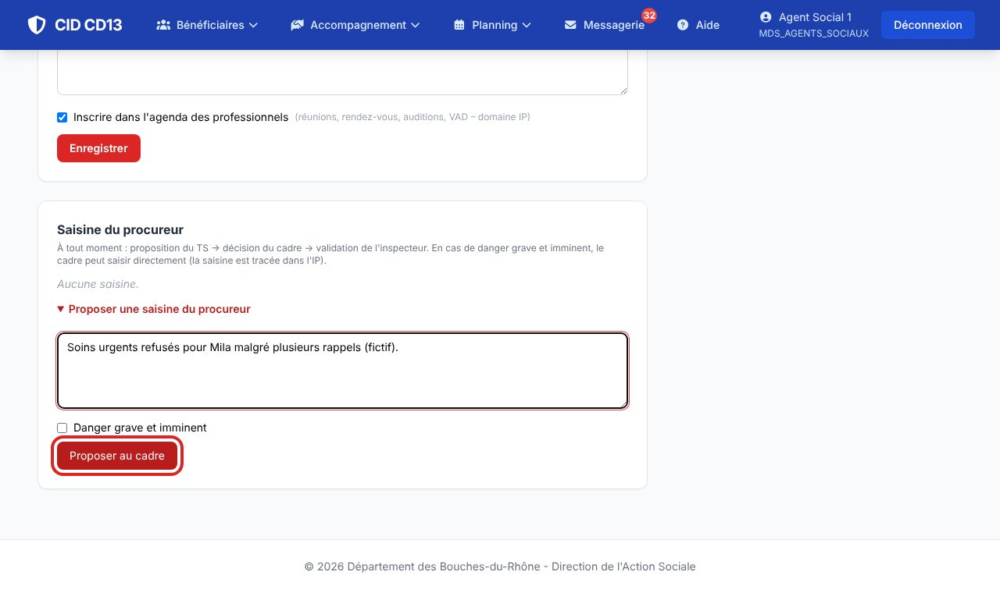
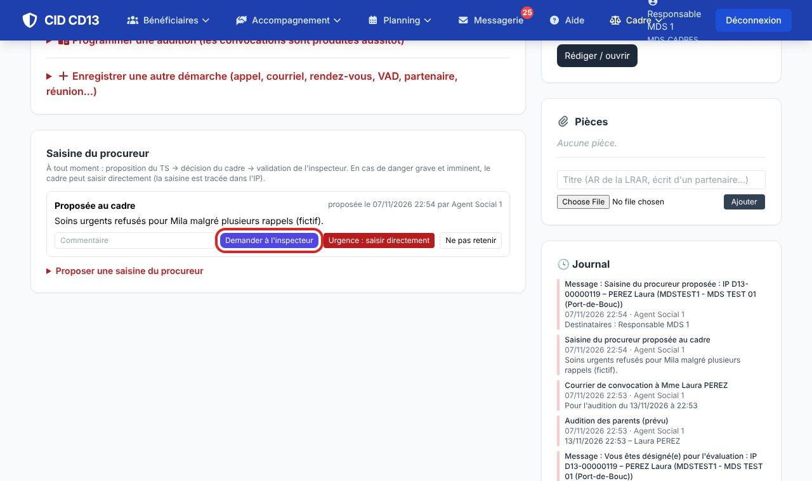
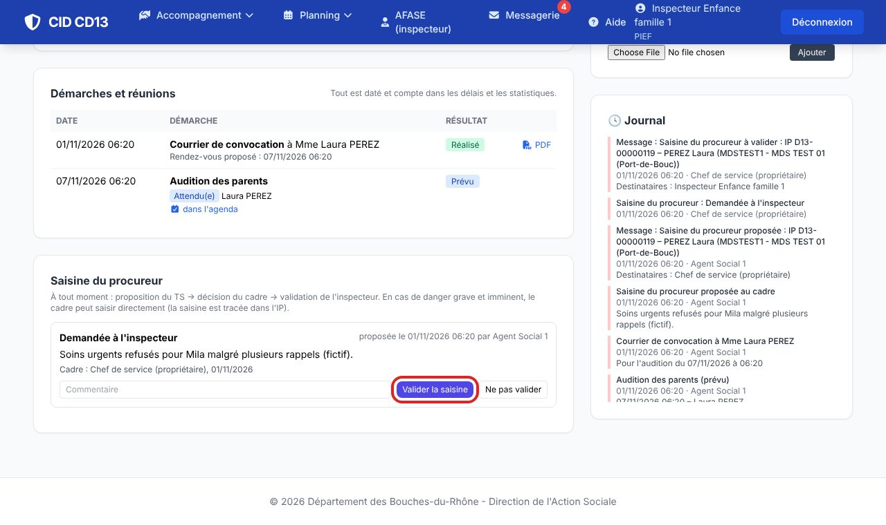
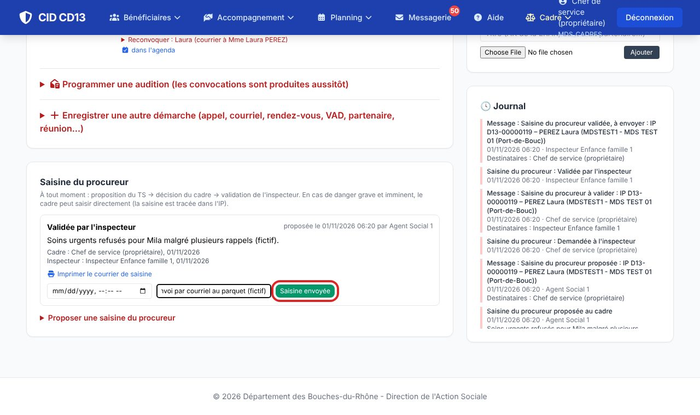

1Proposer (binôme)

- Dans le cadre Saisine du procureur, ouvrez Proposer une saisine du procureur : décrivez le motif, cochez danger grave et imminent si c'est le cas, puis Proposer au cadre.
2Décider (cadre)

- Le cadre choisit : Demander à l'inspecteur, Urgence : saisir directement, ou Ne pas retenir (avec un commentaire).
3Valider (inspecteur) et envoyer


- L'inspecteur valide ou ne valide pas la saisine.
- Une fois validée, Imprimer le courrier de saisine ; après l'envoi, indiquez la date et la référence ou le mode d'envoi, puis Saisine envoyée.
Bon à savoir
- Chaque étape est datée et tracée dans l'IP (journal et messages aux personnes concernées).
Et ensuite ?
Cliquez sur une image pour l'agrandir. Le cadre rouge montre où cliquer ou quoi remplir. Toutes les données affichées sont fictives.